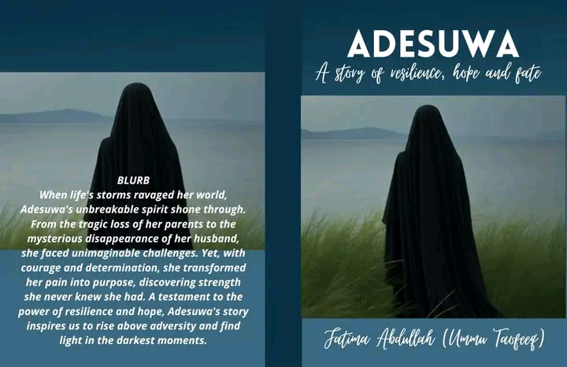
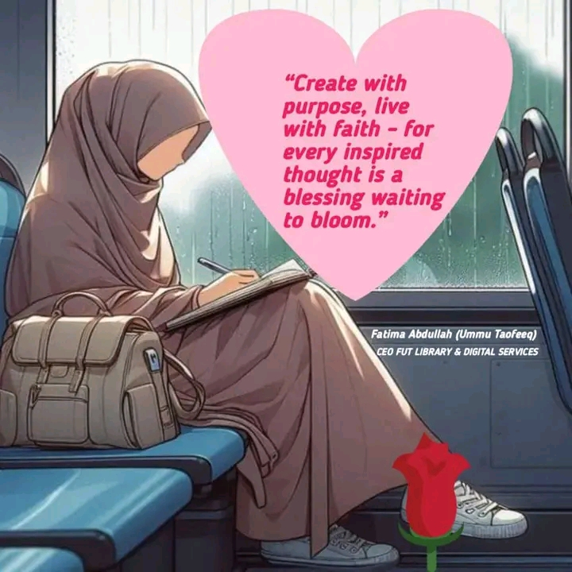

Rendering Excellence Through Word, Design and Media
About FUT Library & Digital Services:
FUT FUT Library & Digital Services is a CAC-registered creative-educational brand offering tutoring, writing, design, and videography services, blending knowledge, storytelling, and digital innovation to empower individuals and businesses.
. From the love of writting and creativity📕📕📕.

A story of resilience, hope and fate

Create with purpose, live with faith -for every inspired thought is a blessing waiting to bloom